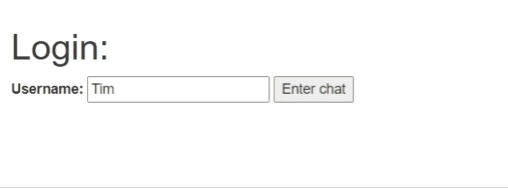
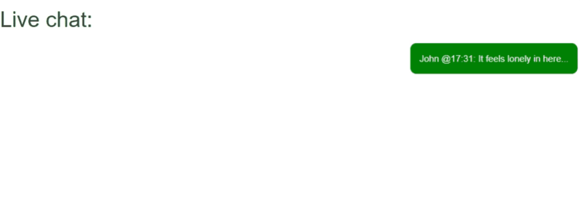

Overview
For this week's activity, you will create a livechat room using socket.io and sessions. You will be provided a template, and this is easier than it sounds.
The primary task here is to combine some of your learning from the past semester and create a simple yet very useful web application. While the application does not have a backend, one could be easily implemented.
Start working with the files located within the zip folder here.
Assignment
Core Requirements
When a user logs in using the ta12-login.ejs, their username is stored as a session variable. There cannot be duplicate usernames. If a user enters a duplicate username, they are notified.
When a user logs in, other users logged into the chat are notified via an "admin" user.
When a user sends a message, it is appended to their own chatbox and all other connected users. (basically, the page follows the basic operations of a messaging application)
This application has a lot of potential for creativity. For example, you could:
Include the time a message was sent in the message.
Make the messages persistent using MongoDB.
Notify users when a client disconnects.
Use socket.io rooms (instead of a global chat)
Rubric
| Criteria | Above and Beyond | Meets Requirements | Slightly Deficient | Significantly Deficient | Some Attempt Made | No Attempt Made | Weight |
|---|---|---|---|---|---|---|---|
| 100% | 93% | 85% | 70% | 50% | 0% | ||
| Login | Username is saved as a session variable, no duplicate names, duplicate name results in user being notified | Username is saved as a session variable, no duplicate names | Username is saved as a session variable, duplicates are permitted | Username is saved locally duplicates are permitted | Attempt to login results in application error | No Login | 31% |
| Live Chat | Admin user notifies the logging in of other chat members | Notifications of logging in of chat members recived but not done through Admin | Notifications of logging in not done through admin and not received at time of event | Chat member login notification received but not displayed | Chat member login results in application error | No implementation of chat memeber notifications | 31% |
| Messaging | All clients are updated with the submission of messages | All clients are updated with the submission of messages but not at the time of the event | All clients are updated with the submission of messages but not all text is displayed | Messages received by members but not displayed | Submission of messages results in an application error | No implementation of messaging | 31% |
| Extra functionality | Addition of one of the suggested features (Or a feature you've chosen) | Attempt shown to add additional feature but results in error | No additional features added | 7% |